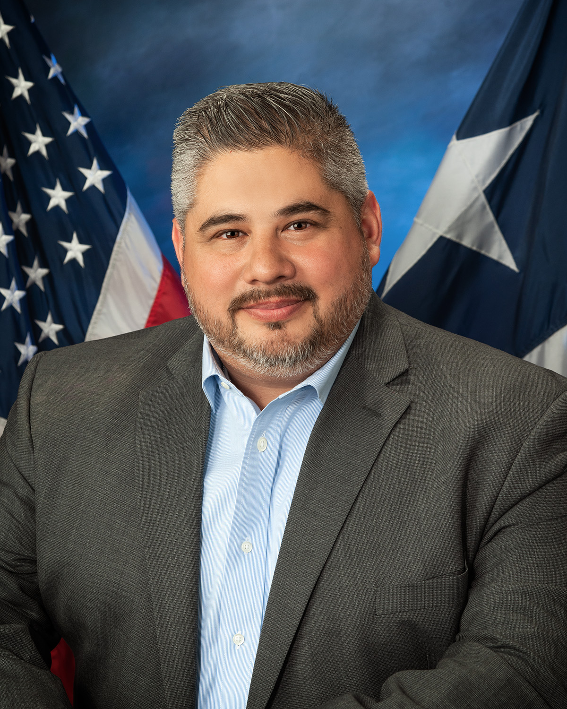

Hello, my name is Victor Treviño III, thank you for showing your interest in my candidacy to be your next Justice of the Peace for Precinct 6,Place 1. I am asking for your support and vote in the Primary Election in March of 2020 and again in the General Election in November of 2020.
I am asking for your support and vote based on the same qualities I look for one when I do my research to determine which candidates I decide to support and eventually vote for. My candidacy’s focus is on my roots in Precinct 6, my proven advocacy for my community, my accessibility throughout my life, and my qualifications to be your next Justice of the Peace for Precinct 6.
I am asking for your support and vote based on the same qualities I look for one when I do my research to determine which candidates I decide to support and eventually vote for. My candidacy’s focus is on my roots in Precinct 6, my proven advocacy for my community, my accessibility throughout my life, and my qualifications to be your next Justice of the Peace for Precinct 6.
My family’s roots go back 90 years and four generations in Precinct 6. My great grandfather moving his family into Precinct 6’s 5th Ward’s El Crisol neighborhood, where my great uncle still lives today. Another of my great grandfathers moved his family into Precinct 6’s North Side, where my 90 year young grandmother still lives today right behind Poppa Burger. My mother, current Constable Silvia Trevino, was born in Precinct 6’s 5th Ward’s El Crisol, and eventually raised in Precinct 6’s North Side, where she attended and graduated from Looscan Elementary, Marshall Middle School, and Jeff Davis (now North Side) High School. My father, retired Constable Victor Trevino Jr., immigrated to America over 60 years ago, where him and his family settled and was raised in Precinct 6’s 2nd Ward neighborhood. My father attended and graduated from Lubbock Elementary, Jackson Middle (
My name is Victor Treviño III and I am asking for your support to be your next Justice of the Peace for Precinct 6, Place 1. I was born, raised, and continue to live in Precinct 6, I am a proud graduate of Cage Elementary, Navarro (Jackson) Middle School, and Stephen F. Austin High School. I am a third-generation resident of Precinct 6. My mother’s grandparents, my great-grandparents, moved into Precinct 6’s North Side right behind Papa Burger over 80 years ago, the same house my 90-year young grandma still lives in today. I proudly received my baptism from and attended Holy Name Catholic Church and school. After immigrating from Mexico, my father’s parents and his eight siblings all moved into Precinct 6’s historic Second Ward, where my 96-year young grandma lived until her passing just last year. After leaving the North Side, my parents ultimately brought me and my brothers and sister to Precinct 6’s East End, where I have lived for the past 34 years.
After graduating Austin High School, I worked in the corporate world at EZ Pawn becoming their youngest manager ever of one of their multimillion-dollar pawn shops at only 20 years of age. After five years with EZ Pawn, I decided to go back to college, beginning at Houston Community College (HCC), eventually transferring to University of Houston (central campus). During my time in college, I waited tables at Pappasito’s (Richmond and Kirby). After a year of waiting tables, I accepted a role as bar manager at The Cellar Bar on Richmond, between Kirby and Buffalo Speedway. After a year of managing The Cellar Bar, my friend and business partner Markos Pappas and I decided to buy the bar, which we owned and operated for the next five years.
After graduating the University of Houston (central campus) with a degree in History, I decided to sell my half of the bar and become a teacher at my alma mater, Stephen F. Austin High School. Throughout all 13 years at Stephen F. Austin High School as a teacher, I have been a proud union member of the Houston Federation of Teachers (HFT); becoming our HFT union steward for the past 8 years. Throughout my 13 years here at Austin, I have fought for equitable resource allocation for our students, fair pay standards and treatment for our teachers and support staff, and being a relentless advocate for our community and the preservation of our community’s established history and culture.